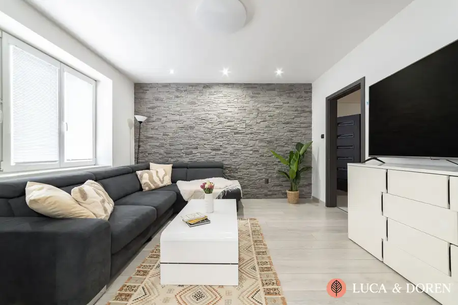
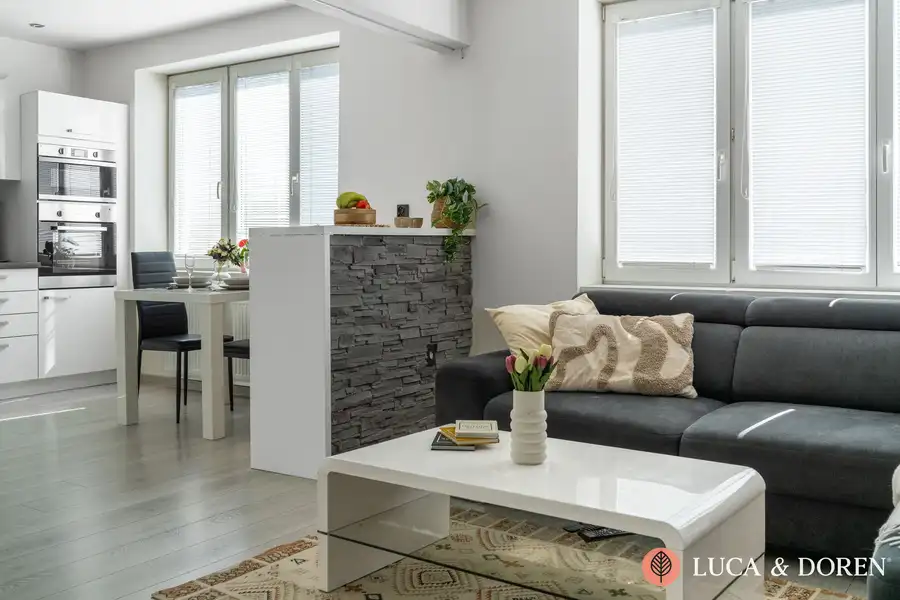
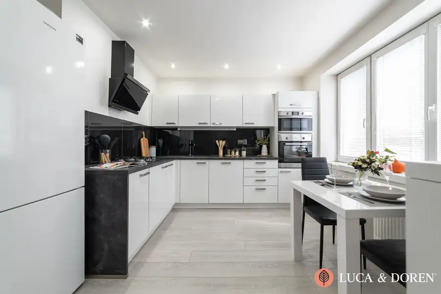
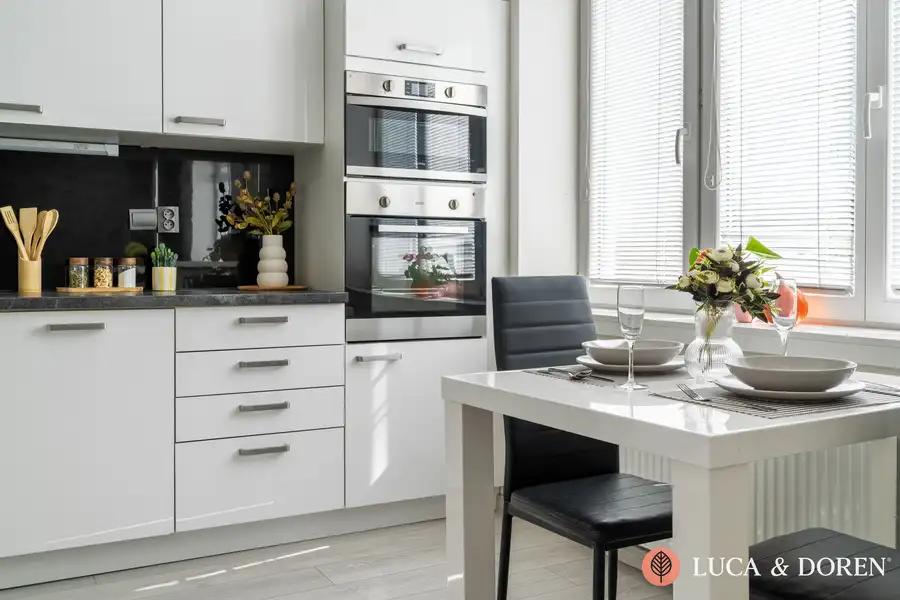
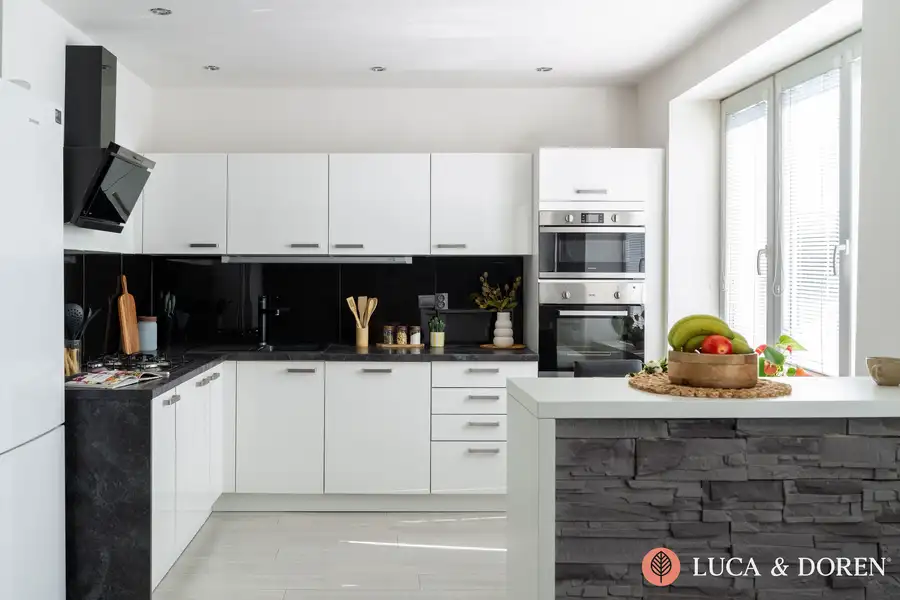
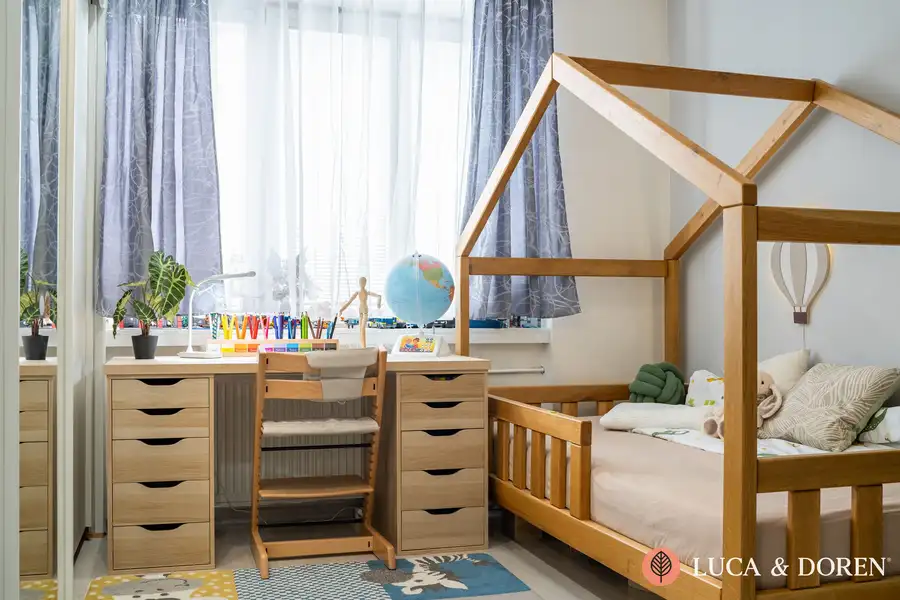
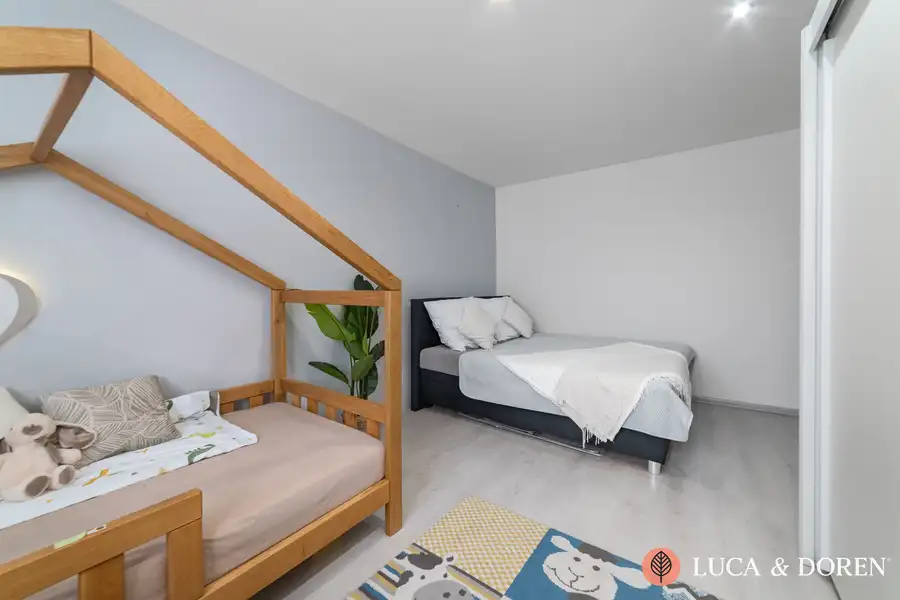
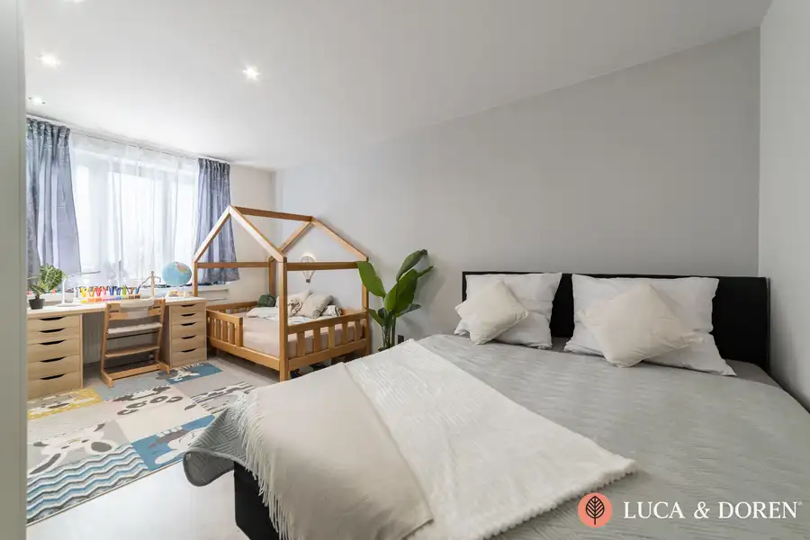
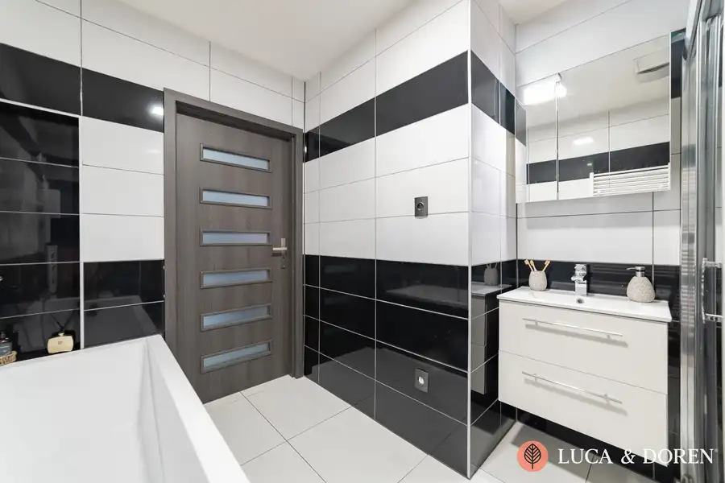

LUCA & DOREN | Na predaj | 2-izbový byt | Dubnica nad Váhom | 58 m² | Priestranné bývanie s nízkymi nákladmi
Dubnica nad Váhom










- Dispozícia2-izbový
- Plocha58 m²
- Poschodie3. z 4
- StavKompletná rekonštrukcia
- Energetická triedaB
O nehnuteľnosti
Bývanie s priestorom, charakterom a bez starostí so zariaďovaním.Realitná kancelária LUCA & DOREN vám ponúka na predaj priestranný, kompletne zariadený byt v historickej budove v Dubnici nad Váhom, ktorý zaujme veľkorysou dispozíciou, príjemným svetlým interiérom a nízkymi mesačnými nákladmi.Byt prešiel rekonštrukciou, v rámci ktorej bola okrem iného menená elektroinštalácia. Veľkou výhodou je, že sa predáva vrátane kompletného zariadenia a vybavenia, takže nový majiteľ sa môže nasťahovať prakticky bez ďalších investícií.Srdcom bytu je priestranná denná časť. Obývacia izba je prepojená s veľkou kuchyňou a jedálenským priestorom, vďaka čomu vzniká otvorený a vzdušný priestor vhodný na každodenný rodinný život aj spoločné chvíle s návštevou. Kuchyňa ponúka dostatok pracovnej aj úložnej plochy a je vybavená vstavanými spotrebičmi.Interiér pôsobí svetlo a čisto, pričom biele a neutrálne tóny dopĺňajú kontrastné tmavé prvky a dekoratívny kamenný obklad, ktorý sa objavuje aj v obývacej časti.Priestranná kúpeľňa disponuje vaňou aj samostatným sprchovacím kútom, závesným WC, umývadlom s úložným priestorom, rebríkovým radiátorom a priestorom pre práčku. Súčasťou vybavenia je aj nový kotol.Spálňa poskytuje dostatok priestoru a jej ďalším benefitom je odhlučnená stena, ktorá zvyšuje komfort a súkromie bývania. V súčasnosti je izba prakticky rozdelená na spaciu a detskú časť, čo zároveň ukazuje možnosti jej využitia podľa potrieb nového majiteľa.Vstupná chodba ponúka množstvo úložného priestoru vďaka vstavaným skriniam na mieru, takže byt zostáva praktický aj pre rodinu s deťmi.Hlavné benefity nehnuteľnosti:- historická budova s charakterom,- byt po rekonštrukcii,- menená elektroinštalácia,- nízke mesačné náklady,- kompletné zariadenie zostáva v byte,Možnosť okamžitého bývania bez potreby ďalšieho zariaďovania.Byt je ideálnou voľbou pre tých, ktorí hľadajú priestranné a komfortné bývanie v Dubnici nad Váhom a zároveň ocenia možnosť kúpiť nehnuteľnosť kompletne zariadenú a pripravenú na nasťahovanie.Uvedená cena je konečná, pokiaľ sa zmluvné strany nedohodnú inak, a nenavyšuje sa o odmenu sprostredkovateľa. V cene je zahrnuté právne poradenstvo, vyhotovenie kúpnych zmlúv, hypotekárne poradenstvo a uhradenie správneho poplatku za návrh na vklad do katastra nehnuteľností.Lenka LamačkováLUCA & DOREN s. r. o. +421 911 280 309lamackova@lucadoren.sk
Parametre
- Cena vrátane energií
- Nie
- Druh
- 2 izbový byt
- Dátum zverejnenia
- 04. 09. 2026
- Energetický certifikát budovy
- B
- Podlažie
- 3
- Počet nadzemných podlaží
- 4
- Počet pivníc
- 1
- Stav nehnuteľnosti
- Kompletná rekonštrukcia
- Typ
- Predaj
- Typ konštrukcie
- Tehlová
- Vybavenie
- Pivnica
- Úžitková plocha
- 58 m²